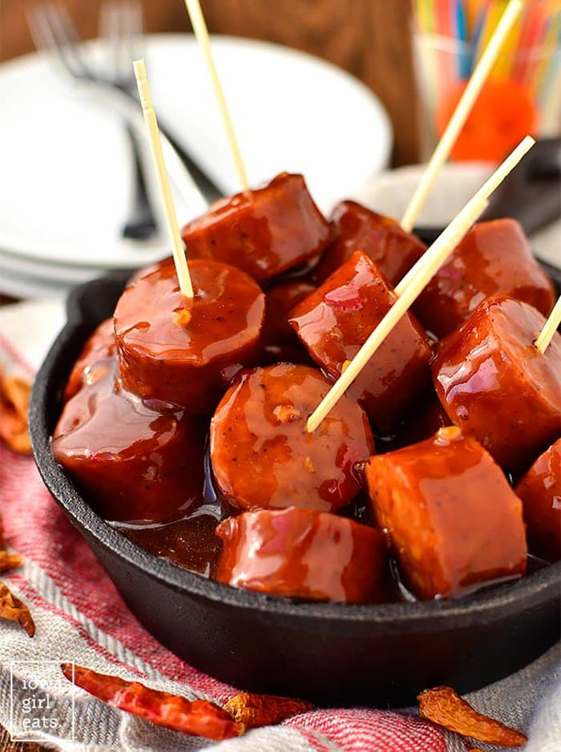

Crock-Pot Sausage Bites

Description
A sweet and spicy appetizer, that is easy to make.
Ingredients
- 3 packages kielbasa approx 40 ounces, cut to 1 inch cubes
- 2 cups BBQ sauce
- 1 (10.5 ounce) jar red pepper jelly
- 2 tablespoons honey
- 2 tablespoons dark brown sugar
- 1 tablespoon red pepper flakes or more if you want it extra spicy
Steps
- Combine all ingredients in slow cooker. Stir to combine.
- Cook on low 6 hours, increasing to high for the last 30 minutes of cooking
(or on high 3.5 to 4 hours total).
- Stir every 30 minutes to make sure the bottom kielbasa isn't burning.
- Enjoy!